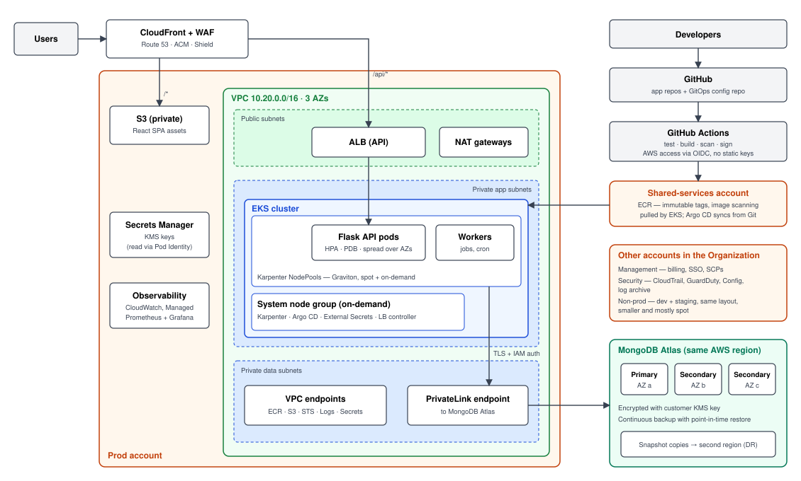

Innovate Inc. — Cloud Architecture Design
Flask REST API · React SPA · MongoDB · AWS with managed Kubernetes (EKS). The diagram is on the last page.
Summary. Run the API on EKS in a three-AZ VPC, serve the SPA from S3 behind CloudFront, and keep data in
MongoDB Atlas reached over PrivateLink. Environments are isolated by AWS account. Everything is defined in Terraform
and deployed through GitOps, so the same design costs a few hundred dollars a month today and scales to millions of
users by raising limits, not by re-architecting.
1. Cloud environment structure
Provider: AWS. GKE is an equally good Kubernetes service, so this is not a technical knock-out. AWS wins for a
team with limited cloud experience on three practical points: the largest hiring pool and body of documentation,
first-class MongoDB Atlas integration (PrivateLink, IAM authentication, Marketplace billing), and Karpenter for
cost-efficient node scaling. If the founding team already knows GCP, the same design maps one-to-one onto GKE.
Five accounts in one AWS Organization, created with Control Tower:
| Account | Purpose |
|---|
| Management | Consolidated billing, IAM Identity Center (SSO), service control policies. No workloads. |
| Security | Organization-wide CloudTrail, GuardDuty, Config and Security Hub; immutable log archive. Read-only for engineers. |
| Shared services | ECR registry, CI/CD roles, Terraform state, parent DNS zone. |
| Non-prod | Dev and staging as separate namespaces in one small cluster. Split into two accounts when the team grows. |
| Prod | Production workload and data access only. Changes arrive through the pipeline; human access is break-glass. |
The account is the strongest isolation boundary AWS offers: a mistake or compromised credential in dev cannot touch
production data, per-environment cost shows up without tagging discipline, and guardrails (allowed regions, no public
S3, no disabling CloudTrail) are enforced once at the organization level. Five is the minimum that gives this; more
accounts would be overhead for a small team.
2. Network design
- One VPC per environment, /16, across three AZs, with non-overlapping ranges so they can be peered later. Three subnet tiers per AZ:
public (ALB and NAT gateways only), private app (EKS nodes and pods), private data (VPC endpoints and the Atlas PrivateLink endpoint). Nothing in a private tier has a public IP.
- Ingress: Route 53 → CloudFront with AWS WAF (managed rule sets, rate limiting) → S3 for the SPA and → ALB for
/api/*.
The ALB accepts traffic only from CloudFront. TLS everywhere with ACM certificates.
- Egress: NAT gateway per AZ in prod, a single one in non-prod. Traffic to ECR, S3, STS, CloudWatch and Secrets Manager stays on VPC endpoints, which is both safer and cheaper than NAT.
- Segmentation: security groups reference each other rather than CIDR ranges (ALB → nodes → endpoints). Inside the cluster, Kubernetes NetworkPolicies are default-deny per namespace, with explicit allows.
- Control plane access: the EKS API endpoint is private; engineers reach it through SSO and a client VPN, with no bastion hosts or SSH keys. VPC flow logs and GuardDuty (including EKS runtime monitoring) feed the Security account.
3. Compute platform
EKS with managed add-ons and a pinned, regularly upgraded Kubernetes version; non-prod is upgraded first.
- Node groups: a small on-demand managed node group (2–3 nodes across AZs) runs only cluster-critical components. Application pods run on
Karpenter NodePools, which pick instance types to fit pending pods, mix spot with on-demand, prefer Graviton, and consolidate under-used nodes. Stateless API pods tolerate spot; a baseline stays on on-demand.
- Scaling: Horizontal Pod Autoscaler on CPU and request rate for the API (KEDA for queue-driven workers later). Vertical Pod Autoscaler runs in recommendation mode to right-size requests, not to resize live pods. Karpenter adds nodes within about a minute. At today's traffic this means two small API pods on two nodes.
- Resource allocation: every container declares requests; memory limit equals request, no CPU limit. Namespaces per team/service with ResourceQuota and LimitRange, PodDisruptionBudgets and topology spread across AZs, Pod Security Standards at "restricted".
- Identity and secrets: pods get AWS permissions through EKS Pod Identity, one role per service. Secrets live in Secrets Manager and are synced by External Secrets Operator; Kubernetes secrets are envelope-encrypted with KMS.
Containerization. Multi-stage Dockerfile on a slim Python base, dependencies pinned by lock file, non-root user, read-only filesystem, Gunicorn as the server. Images are tagged with the git SHA, never latest.
- Build (CI, GitHub Actions): lint and tests → image build with layer cache → vulnerability scan that fails on critical findings → SBOM and cosign signature → push. The workflow assumes an AWS role through OIDC, so no long-lived keys exist.
- Registry: one ECR in the shared-services account with immutable tags, scan-on-push, lifecycle rules for old images and cross-account pull for both clusters. The exact image tested in staging is the one promoted to prod.
- Deploy (CD, GitOps with Argo CD): CI commits the new image tag to a config repository (Helm charts). Argo CD in each cluster syncs it: automatically to dev and staging, to prod after an approved pull request. Argo Rollouts shifts traffic gradually and rolls back on error rate. Git is the audit log and the rollback mechanism.
- Frontend: the SPA is built in CI, uploaded to a versioned S3 bucket and the CloudFront cache is invalidated; it needs no cluster capacity.
4. Database
MongoDB Atlas on AWS, in the same region as the cluster. The alternatives lose on substance: Amazon DocumentDB
is a different engine that emulates part of the MongoDB API, so driver and feature incompatibilities surface late;
self-managing MongoDB on Kubernetes or EC2 makes a small team own upgrades, backups and failover for its most critical
component. Atlas is run by the vendor, scales from a small replica set to a sharded cluster without migration, and is
billed through AWS Marketplace.
- Security: reachable only over PrivateLink, with no public endpoint or IP allowlists. Applications authenticate with their IAM role, so there is no database password to leak. Encryption at rest with a customer-managed KMS key, TLS in transit, database auditing on. The most sensitive fields additionally use client-side field-level encryption so they are unreadable even to database administrators.
- High availability: three-node replica set spread over three AZs, automatic failover in seconds, majority write concern and retryable writes in the application. Compute and storage auto-scale; sharding is added when a single replica set is no longer enough.
- Backups: continuous cloud backup with point-in-time restore, plus a snapshot schedule (hourly, daily, weekly, monthly) copied to a second region. A restore into a scratch cluster is rehearsed every quarter; an untested backup is not a backup.
- Disaster recovery: AZ loss is handled automatically by the replica set and the multi-AZ cluster. Region loss: restore the latest snapshot copy in the second region and recreate the stack from Terraform and Git. Initial targets are RPO ≤ 15 minutes and RTO ≤ 4 hours, validated by a yearly exercise. When the business needs minutes, add Atlas nodes and a warm cluster in the second region; the design does not change.
High-level diagram — production (non-prod mirrors it at smaller scale)
